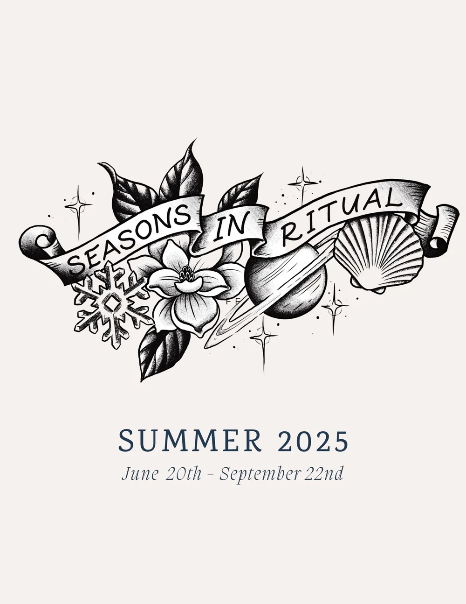

Moon School
If you don't know how to schedule quiet time for yourself, go with the Moon. She has her own pace, and Moon School is how you get back to yours.

A month with the Moon
Moon School follows the lunar cycle through one astrological season. Every school starts and ends with the dark Moon: the quiet part of the cycle where we rest, shed what we no longer need, and let it get transmuted.
Each time the Moon moves into a new sign, about every two to three days, you get a short video and a writing prompt. Over the month you learn her cycles, build your intuition, and start manifesting from a steadier place.
No astrology experience needed. That is totally fine. Jamie teaches as she goes, and the group pulls cards and works the cycle together.
Join Moon SchoolHosted in the Cosmic Softness community on Skool. From $55 a month.
Learn your own pace of life
Rest with the dark Moon
Two and a half days that bring you back to center, back to yourself. That's where every cycle begins.
Plant with the new
When the first light returns, that's when we plan. New moons are fertile ground for the seeds you want to grow.
Receive with the full
See what came up, reflect on how you're dealing with life, and let go of the old stories that no longer serve you.
The Seasons in Ritual planner
A three-month digital calendar built on the witch's wheel, one for each season of the year. It runs solstice to equinox with moon cycles, moon names, important esoteric dates, journal prompts, and a few spells.
Jamie pulls tarot cards to set the theme for the whole season, and the prompts follow that energy. Use it in GoodNotes or print it out.
Get the planner · $24.99
Not sure where to start?
Watch Jamie work the cycle for free first. New videos with every moon.
Watch on YouTube Ask a question